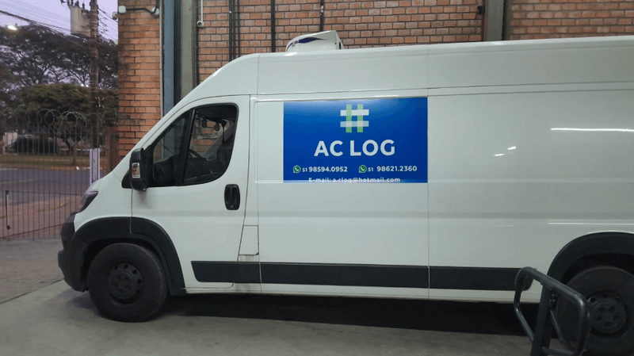
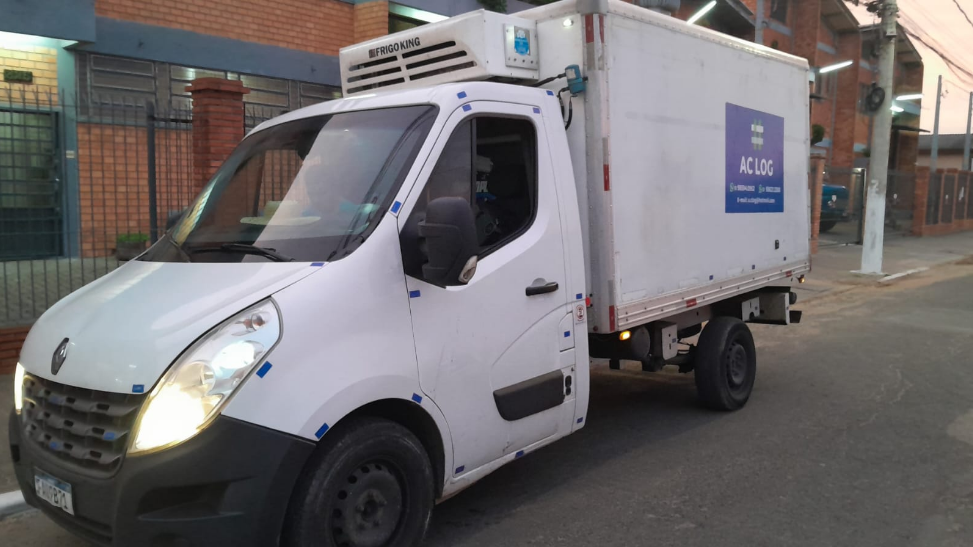
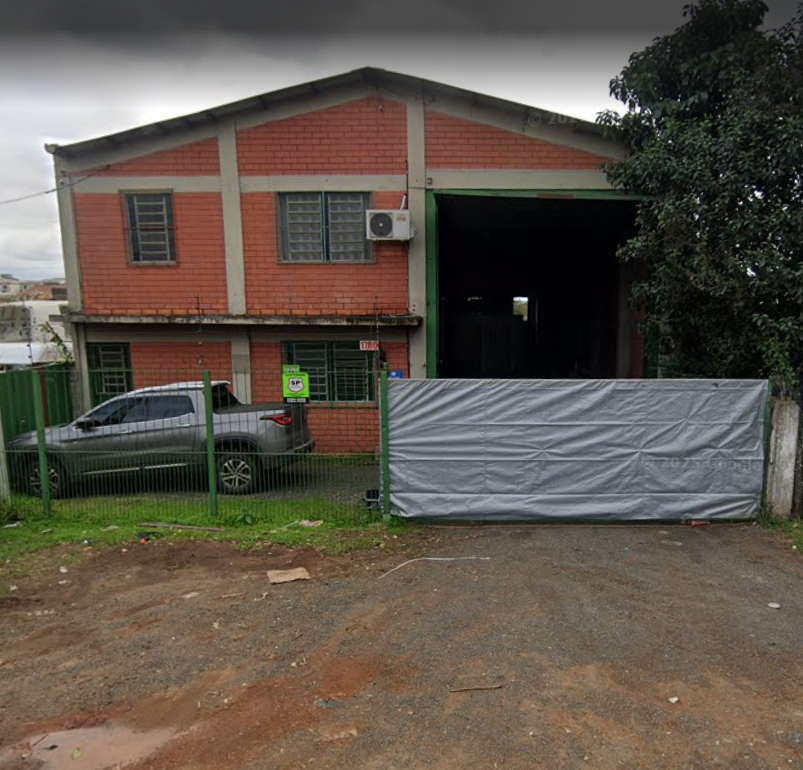

Soluções completas em logística para sua empresa ir mais longe.
Entregas rápidas e seguras para todo o estado, incluindo serviço de carga e descarga.
Soluções eficientes para empresas de todos os portes.
Especialistas em carga resfriada — nosso ponto forte. Estrutura completa com câmara fria para laticínios, carnes e perecíveis.
Acompanhe sua carga em tempo real com total transparência.
Compromisso com o cliente e o prazo de entregas dentro da grade da operação.
Cuidado e atenção em cada carga transportada.
Atendemos Zaffari, Stok Center, Atacadão, Asun e outros.
A AC Log é uma empresa de logística e transporte sediada em Canoas/RS, com mais de 10 anos de experiência no mercado. Nasceu com o objetivo de oferecer soluções logísticas eficientes para transporte, distribuição e apoio operacional, e ao longo dos anos consolidou sua presença no Rio Grande do Sul com seriedade e comprometimento. Hoje, a empresa é gerida por uma dupla de profissionais dedicados que, juntos, conduzem as operações com foco em resultado, agilidade e confiança. Conta com uma estrutura formada por vans, caminhões e parceiros terceirizados, atendendo diferentes demandas com flexibilidade e segurança. Entre os clientes atendidos estão grandes redes como Zaffari, Stok Center, Atacadão, Asun e varejos em geral, sempre prezando pela pontualidade e cuidado com as mercadorias. A empresa atua na Serra Gaúcha, Litoral, Região Metropolitana de Porto Alegre e demais localidades do RS. Além do transporte, oferece suporte para armazenagem refrigerada em câmara fria, atendendo produtos como laticínios, carnes e alimentos perecíveis.


